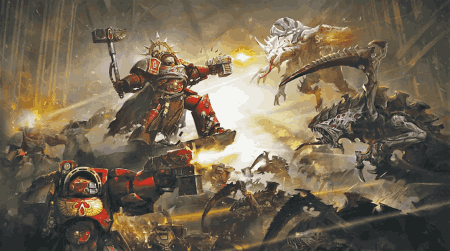

Tilbaka
Tyranid myndaverk
Tyranid audioverk
Héran er myndband sem ég fann af einhverjum að lesa "The Devastation of Baal" hljóð bókina
Bókin fjallar um versta herin í warhammer 40k heiminum(blood angels) og hvernig tyranid skepnurnar nær drápu þá alla og heima plánetu þeirra.
